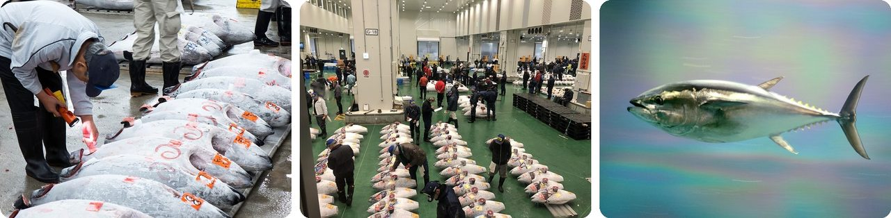
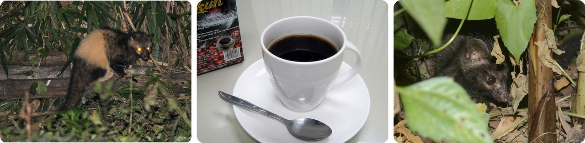
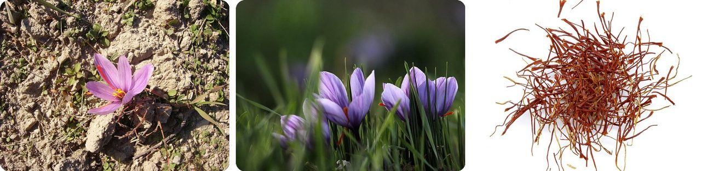
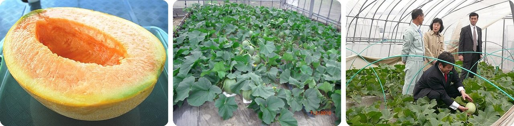
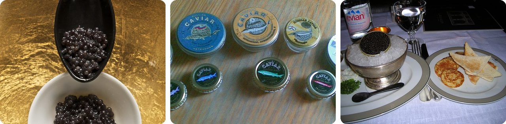
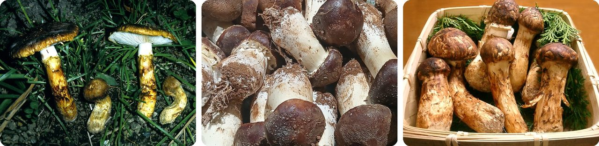
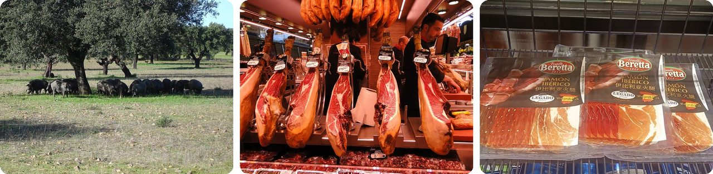
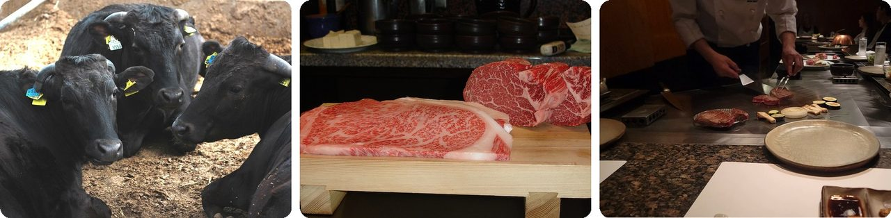
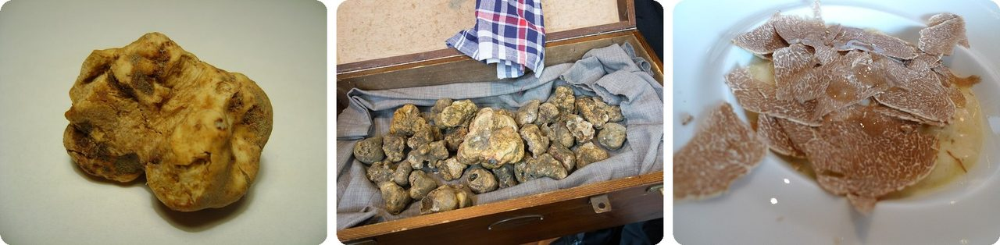
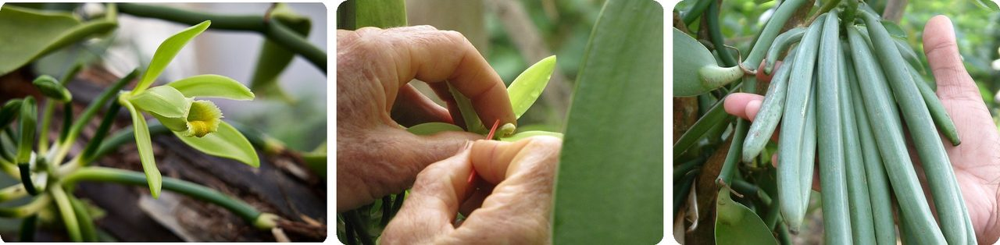

🌍 Top 10 World's Priciest Foods
Oct 30, 2026
1. 🇯🇵 One bluefin tuna sold for ¥510 million

On January 4, 2026, at Tokyo's Toyosu Market, a single 243 kg bluefin tuna sold for ¥510 million, about US$3.2 million. That fish weighed about as much as three grown men, and it worked out to roughly $13 per gram.
So why pay that much? In Japan, the first foods sold each year are thought to bring good luck, and bluefin tuna is the big one. Winning the first tuna auction gets a restaurant on the news, so buyers bid far above the fish's normal price.
The old record was ¥333.6 million in 2019, paid by the owner of the Sushi Zanmai restaurant chain.
Basically, it's a good-luck charm that turns into sushi.
2. 🇮🇩 Kopi luwak is coffee made from beans an animal pooped out

In Indonesia, a furry tree animal called the Asian palm civet eats ripe coffee cherries. The beans pass through its gut, ferment along the way, and come out in its droppings.
Farmers collect those droppings, clean the beans, and roast them. Wild-collected beans can sell for $1,000 per kilogram, about ten times the price of beans from farmed civets.
The habit started in the 1800s, when farmers in central Java began brewing coffee from beans they found in civet droppings on their plantations. Today, though, many civets are kept in small cages and force-fed coffee cherries, which has raised serious concerns about how the animals are treated.
Think of it as coffee that took a trip through someone's stomach first.
3. 🌸 A kilogram of saffron takes 150,000 flowers

Saffron is the red threads inside a purple crocus flower. Each flower has only three of them, and every single one is picked by hand.
To get one kilogram of dried saffron, workers have to pick about 150,000 flowers, which takes around 40 hours of picking. The rush is real: the flowers open at dawn and start wilting the same day, and the whole field blooms within one or two weeks.
The plant can't even make seeds. People keep it going by digging up its underground bulbs, splitting them, and planting them again. Top-grade saffron regularly sells for more than $5,000 per kilogram.
Every pinch is a little field of flowers, picked one by one.
4. 🇯🇵 Two Yubari King melons sold for ¥5.8 million

The Yubari King is a cantaloupe grown in greenhouses in Yūbari, a small city in Hokkaido, Japan. A top-grade one must be perfectly round with a smooth skin, and a piece of stem is snipped with scissors and left on top just for looks.
The first melons of each season go to auction, and those first sales can bring huge prices. In May 2026, at an auction in Sapporo, a produce company paid ¥5.8 million for a pair, so ¥2.9 million per melon, about what a small new car costs.
Some people in Japan give these melons as fancy summer gifts.
Think of it as a fruit dressed for a black-tie party.
5. 🐟 A beluga sturgeon needs about 20 years to make caviar

Beluga caviar is the eggs of the beluga sturgeon, the largest freshwater fish in the world. The biggest accepted one, caught in Russia's Volga River in 1827, weighed 1,571 kg and was 7.2 meters long, longer than a minivan.
Here's the catch. A female doesn't lay eggs until she's 16 to 22 years old, and after that only every four to seven years.
Overfishing has made the beluga critically endangered, and the United States has banned beluga caviar from the Caspian Sea since 2005. Fewer fish means even higher prices.
Imagine waiting 20 years for your chicken to lay its first egg.
6. 🇯🇵 The matsutake mushroom only grows with living pine trees

Matsutake means "pine mushroom" in Japanese. In Japan and Korea, it grows hidden under the leaves on the forest floor, attached to the roots of red pine trees, and the two help each other.
Then, in the second half of the 1900s, a tiny worm that kills pine trees attacked Japan's pine forests. Fewer pines, fewer mushrooms, so Japan now harvests less than 1,000 tons a year and imports the rest from China, Korea, North America and northern Europe.
Squirrels, rabbits and deer also hunt for the same once-a-year crop. Early-season Japanese matsutake can reach $1,000 per kilogram, while imported ones average about $90.
In other words, no tree buddy, no mushroom.
7. 🇪🇸 The best Iberian ham comes from pigs that eat acorns

Jamón ibérico de bellota comes from black Iberian pigs that roam oak forests, called dehesas, along the border between Spain and Portugal. In the last months before slaughter, they eat only acorns.
All that walking and the acorn diet shape the flavor, and the meat ends up streaked with fat. Each leg is then salted, dried and cured for 36 months, so a ham from a pig raised in 2026 won't be ready until 2029.
The very top grade, from pure-bred pigs, gets a black label and is called pata negra ("black hoof"). In 2017, people in Spain ate about 13,000 metric tons of jamón ibérico and related products.
Basically, you can taste what the pig had for dinner.
8. 🇯🇵 Every Kobe beef cow has a 10-digit ID number

Real Kobe beef must come from Tajima cattle, a type of Japanese Black cow born in Hyōgo Prefecture around the city of Kobe. The meat also has to pass a strict score for its streaks of fat.
Only about 3,000 cattle a year qualify. Every cow in Japan, including these, can be traced by a 10-digit number through its whole life, from birth to the plate.
Kobe beef wasn't sold outside Japan at all until 2012, when the first shipment went to Macau. Its fat also melts at a lower temperature than regular beef fat.
Every steak comes with its own birth certificate.
9. 🇮🇹 One white truffle sold for $330,000

The white truffle is a lumpy fungus that grows underground, attached to the roots of oaks and poplars. The most famous ones come from around Alba, in northern Italy, where a truffle fair runs every October and November.
In December 2007, a Macau casino owner, Stanley Ho, paid $330,000 for a single 1.5 kg truffle dug up near Pisa. That's about $220 per gram, for something that looks like a potato.
High prices invite cheaters. Sellers sometimes pass off cheaper truffles as the real thing, so scientists now check where a truffle grew by testing its chemical makeup.
It's a lottery ticket you dig out of the dirt.
10. 🇲🇬 A 12-year-old figured out how to grow vanilla

Vanilla is the second most expensive spice by weight, right after saffron. It comes from the pod of an orchid, and the flower opens for only about one day.
In the wild, only about 1% of the flowers ever get pollinated. Then in 1841, on the island of Réunion, a 12-year-old enslaved boy named Edmond Albius found a fast trick: lift a tiny flap inside the flower with a sliver of bamboo, then press the pollen in place with your thumb.
Farmers still do it his way, flower by flower, within 12 hours of each one opening. The pods then take about six months to ripen, and today Madagascar and Indonesia grow most of the world's vanilla.
So every vanilla cookie owes a thank-you to a kid with a bamboo stick.
Fun fact
Saffron from entry 3 has been faked for centuries. In medieval Nuremberg, people caught selling fake saffron were executed under a law called the Safranschou code. Cheaters have mixed in beetroot, red-dyed silk, horse hair, corn silk and even shredded paper, and a 2012 test found that 15% of pricey truffles sold as French were cheaper ones from China. Famous food fakes, and the clever ways scientists catch them, could be a delicious mystery to explore next.
Photo credits (Wikimedia Commons)
- #1: Tuna auction at Tsukiji Fish Market, Tokyo; 2014.jpg by Joe deSousa, CC0
- #1: Toshimashijyo maguroseri01.jpg by 武藏, CC BY-SA 4.0
- #1: Pacific bluefin tuna.jpg by aes256, CC BY 2.1 jp
- #2: Paradoxurus hermaphroditus · Parambikulam tiger reserve by (c) Firos AK, some rights reserved (CC BY), CC BY
- #2: Kopi Luwak Gayo, Takengon, Aceh.jpg by Gunawan Kartapranata, CC BY-SA 4.0
- #2: Paradoxurus hermaphroditus · Kundannoor, Maradu, Ernakulam, Kerala, India by (c) sunnyjosef, some rights reserved (CC BY), CC BY
- #3: Crocus sativus flower Mund.jpg by MurielBendel, CC BY-SA 4.0
- #3: Harvesting saffron, Gonabad (13960928000822636492949548304526 97824).jpg by Mohammad Javad Mahdizadeh, CC BY 4.0
- #3: Iran saffron threads.jpg by Rainer Zenz, Public domain
- #4: Half cut of Yubari melon.JPG by Captain76, Public domain
- #4: 夕張メロン温室 - panoramio.jpg by painreef3108, CC BY 3.0
- #4: Kazuhiro Haraguchi 20100417 Yubari 03.jpg by 総務省, CC BY 4.0
- #5: Caviar and spoon.jpg by THOR, CC BY 2.0
- #5: Caviar tins (Russian and Iranian) (cropped).jpg by The Ogre, CC BY-SA 3.0
- #5: Beluga Caviar served with blinis and sour cream in Wolesely restaurant, London.JPG by Tzahy Lerner, CC BY-SA 3.0
- #6: Tricholoma matsutake 1988 11 Saizaki Japan.jpg by Japonica, CC BY-SA 4.0
- #6: Fresh matsutake.jpg by Fumikas Sagisavas, CC0
- #6: Matsutake.jpg by Tomomarusan, CC BY 2.5
- #7: Dehesa Pigs.jpg by comakut from Marbella, Spain, CC BY 2.0
- #7: Jamón ibérico (La Boqueria).jpg by K.Weise, CC BY-SA 4.0
- #7: Sliced Iberico ham (Jamón ibérico).jpg by François Nguyen, CC BY 2.0
- #8: Tajimagyu2.jpg by Japanexperterna.se, CC BY-SA 3.0
- #8: 4 Kobe Beef, Kobe Japan.jpg by Orlando G. Calvo, CC BY-SA 3.0
- #8: Kobe Beef.png by Dani Chaboya, CC BY 4.0
- #9: Tuber magnatum.jpg by Marco Plassio, CC BY-SA 3.0
- #9: White truffles from Alba.jpg by Kent Wang from London, United Kingdom, CC BY-SA 2.0
- #9: Risotto with White Truffles from Alba.jpg by Arnold Gatilao from Fremont, CA, USA, CC BY 2.0
- #10: Vanilla orchid flower (50615014291).jpg by Geoff McKay from Palmerston North, New Zealand, CC BY 2.0
- #10: Starr-130312-2169-Vanilla planifolia-flower being hand polinated-Pali o Waipio Huelo-Maui (24576213214).jpg by Forest and Kim Starr, CC BY 3.0 us
- #10: Vanilla beans.jpg by Sunil Elias, CC BY-SA 3.0


.jpg){kind=link}


_(cropped).jpg){kind=link}


.jpg){kind=link}
.jpg){kind=link}


.jpg){kind=link}
.jpg){kind=link}